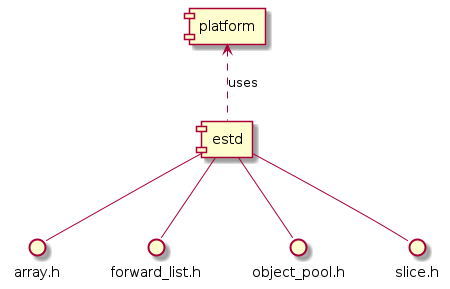

User Documentation
Overview
This documentation helps end-users to understand and effectively use the
estd module. It provides an overview of the module’s contents, grouped by
topic, and includes detailed descriptions of the components, their
functionality, and usage examples.
Container

Below you will find an overview of the contents of the library, grouped by topic.
Containers
Fixed-size array |
|
Double-ended queue, for fast insert and remove operation from front and back. |
|
Forward-linked and intrusive list, for fast and easy insertion. |
|
Provides a pool of objects of the same type. |
|
Key-value map, based on a sorted vector. |
|
Fixed-size ordered vector. |
|
std::priority_queue-like class; keeps its elements sorted according to a comparator. |
|
Provides various mathematical functions and utilities. |
|
queue |
First-in, first-out (FIFO) data structure. |
Last-in, first-out (LIFO) data structure. |
|
std::basic_string-like class. |
|
std::basic_string_view-like class. |
|
First-in, first-out (FIFO) data structure, implemented as a circular buffer. |
|
Variant of the ring buffer, optimized for <256 elements. |
|
Variable length array, with a statically-defined maximum size. |
|
Variable length array, with a statically-defined maximum size. |
Vocabulary types
Represents fixed number of bits. |
|
Function reference to a global or member function. |
|
Checks if integral types or enums have a value or not. |
|
Pointer to multiple same-sized arrays of different types. |
|
Manages an optional value: a value that may or may not be present. |
|
Represents result of an operation, storing a value or an error. |
|
Pointer to a contiguous range of objects; std::span-like class. |
|
Type-safe union. |
Type traits, type utils
Wrapper allowing storage of a reference to a va_list. |
|
Helper templates, querying properties of types. |
|
Utility functions wrapping reinterpret_cast. |
|
A macro to make a class uncopyable that cannot inherit from the uncopyable base class. |
Other utilities
alloc |
Helper functions for APIs allowing custom memory allocators. |
Checking assertions at runtime. |
|
Utility functions which operate on slices. |
|
Typed memory for delayed creation of objects. |
|
Big-endian encoding (data serialization). |
|
Helper struct providing a way to construct objects in pre-allocated memory (‘placement new’ wrapper). |
|
Compile-time integer sequence to represent a sequence of indices. |
|
Checking assertions at compile time. |
|
Templated implementation of the singleton pattern. |
|
Little endian encoding (data serialization). |
|
Time unit types and conversions between them. |
|
Provides transparent wrapper for global objects that are never destructed. |
|
Helper functions to use with the std::tuple type. |
|
The compile-time construct for collection of types. |
|
Helper struct which can be cast to any type, calling the default constructor. |
|
Wrapper allowing storage of a reference to a va_list. |
Algorithms
Helper function operating on iterators, providing C++11 functionality to C++03. |
|
Generic implementations of commonly-used algorithms. |
Numerics
Define numerical limits. |
|
std::ratio-like class template compile-time rational arithmetic support. |